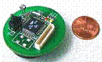
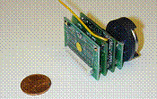
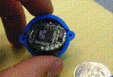
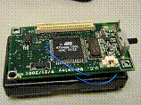
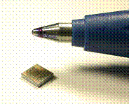

JLH Labs micro-networking
technology is based on an ultra-low power hardware platform. Each node or “mote” has the capability of
being a network routing node or a sensor/actuator node. By consuming less that
2 uA when idle a battery operated node can last for years without requiring
external maintenance.
Every node in a micro-network
contains an embedded processor and an RF transceiver. FSK based communication ensures and optimal
power to range ratio and allows communication links to be robust against
external interference. Per-link bit
rates up to 76.8 Kbps are possible over distances exceeding 300 feet.
JLH Labs networking
technology has been developed through years of experimentation that included
several generations of hardware and software.
|
The weC Node  |
The
weC node was developed in the Fall of 1999 by researchers at UC
Berkeley. It containes 8K of program
memory and just 512 bytes of memory.
On-board temperature and light data could be wirelessly communicated over
it 9600 baud on-off keyed radio. An
internal antenna provided a range of up to 15 feet. |
|
The Rene Node  |
Developed in the summer of
2000, Rene node expanded on the capabilities of the weC node by increasing
available program and data storage.
Additionally, it provided a 51-pin expansion interface that allow for
connections to both analog and digital sensors. As a development platform, hundreds of
sensor boards have been designed to interface to the Rene node. It is equipped with 8K of program memory,
32K of EEProm and is capable of being reprogrammed over the radio link. It communicates at 19,200 via an on-off
keyed 916 Mhz radio. An external
antenna allows for a communication rage of up to 100 feet. |
|
The DOT Node  |
Developed in the summer of
2001, Dot shrunk the capabilities of the Rene node into a compact 1”
node. A complete node including
sensor, computation, communication, and a battery fit in a package the size
of four stacked quarters. It was
unveiled at the 2001 Intel Developers Forum in as the cornerstone of an 800
node demonstration network. The Dot
platform had 16 KB of program memory and 1 K of data memory. It had the same communication capabilities
of the Rene platform. |
|
The Mica Node  |
The Mica node was developed
as the foundation of the NEST (Network Embedded Systems Technology) project
under DARPA (Defense Advanced Research Projects Agency). Designed to facilitate the exploration of
wireless sensor networking, it has been used by over 200 different research
organizations. Mica contains the same
expansion bus as the Rene node allowing it to utilize all existing sensor
boards. The Mica node increases the
radio communication rate to 40 Kbps though using specialized hardware
accelerators and amplitude-shift-keying.
Mica includes 128 Kbps of program memory and 4 K of data memory. It is capable of being radio-reprogrammed
and has a line-of-sight rage of over 100 feet. Mica has been used in applications ranging
from military vehicle tracking to remote environmental monitoring. |
|
The Spec Node  |
Spec was designed in the
fall of 2002 by Jason Hill to be a highly integrated, single-chip wireless node. The CPU, memory, and RF transceiver are all
integrated into a single 2.5x2.5mm piece of silicon. Fabricated by National Semiconductor, it
was successfully demonstrated in March of 2003. Spec contains specialized hardware
accelerators designed to improve the efficiency of multi-hop mesh networking
protocols. Additionally, in includes
an ultra-low power transmitter that drastically reduces overall power
consumption. Spec represents the
future of embedded wireless networking. |